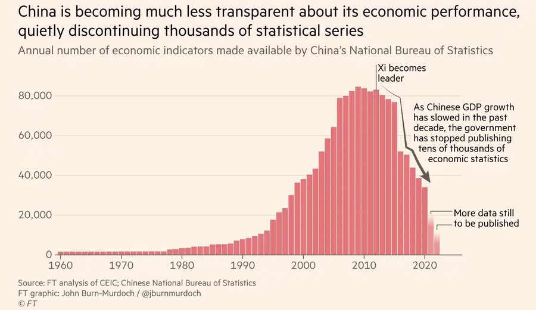

General
Misc
- Htmlwidget Packages
- CRAN Task View: Dynamic Visualizations and Interactive Graphics
- {highcharter}
- Drilldown functionality
- Also, Shiny apps have native drilldown functionality (See Shiny, General >> Misc)
- Highcharter Cookbook
- See R >> Documents >> Visualization (source)
- Drilldown functionality
- {apexcharter}
- Good for mobile
- Syncronization
- {Plotscaper} - Designed for making interactive figures for data exploration.
- All plots in support linked selection by default, as well as wide variety of other interactions, including, zooming, panning, reordering, and parameter manipulation.
- i.e. All plots are synced. Any interaction in one, happens in all the other ones.
- Resources
- Data Viz Design Guide - Best practices for the most common types of visualizations
- Notes from
- Microsoft Paint 3D
- Location: Start >> All Programs >> Paint 3D
- Hightlight Text
- Click 2D Shapes (navbar) >> Select square (side panel)
- Left click and hold >> Extend area around text you want to highlight >> Release
- Choose Line Type color and Sticker Opacity level (37%)
- On area surrrounding text
- If needed, make area size adjustment dragging little box-shaped icons that are along the outside
- On the right side, click the check mark icon to finalize
- Click Menu (left-side on navbar) >> save as >> Image
- It adds a png extension, but you just need to type the name.
- Alt Text
- The guiding principle is to write alt text that gives disabled readers as close to the same experience as nondisabled readers as possible.
- Misc
- Notes from
- In addition to HTML alt=“description”, the longdesc attribute can be used to link to a detailed explanation, or include an extended description within the surrounding content
- Process
- Specify the visualization type which gives context to those familiar with chart types
- Identify what the chart measures. Highlight the dataset’s subject and focus to give folks a foundation for understanding the content.
- e.g. “Gun murders per 100,000 people across different countries.”
- Convey the main message or trend the visualization illustrates. Capture the data’s purpose without overwhelming detail.
- e.g. “The U.S. rate is six times higher than Canada’s.”
- Fractional Data
- Use Stacked Bars instead of Pie or Circular or Donut
- Humans are better at judging lengths than angles (article)
- Use Stacked Bars instead of Pie or Circular or Donut
- Factorial Experiments
{kind=link}
{kind=link}
Concepts
- Exploration and Analysis
- Goal: explore a new dataset, gertan overview, find answers to specific questions
- Fast iteration of many generic charts, don’t customize or worry about color schemes, etc.
- Explanation
- Goal: help others understand a relationship in the data
- Use as few charts as possible, carefully chosen
- Sequence so that they are easy to understand
- Add interaction to help people get a better understanding
- Presentation
- Goal: walk your audience through an argument, help them come to a decision
- Focus on polishing charts: colors, legends, titles, etc.
- Highlighting of key elements (which might be considered biasing in Exploration)
- Possibly use of unusual charts for memorability
- Sequence to make a specific point
SVG
- Better for doing post-processing in Inkscape and gimp
- SVGs won’t be pixelated when you zoom in like PNGs are
- D3 outputs SVG
- svglite PKG
- using svglite instead of base::svg( ) allows you alter text in Inkscape or Illustrator
- requires the used fonts to be present on the system it is viewed on.
- The vast majority of interactive data visualizations on the web are now based on D3.js which often renders to SVG and it all seems to behave. Still, this is something to be mindful of, and a reason to use svg() if exactness of the rendered text is of prime importance
- File size will be dramatically smaller
Layout
- Facetting vs Single Graph

- Layout based on experiement design

- Align title ALL the way to the left (ggplot: plot.title.position = “plot”)
- Remove Legends
- use colored text in title (ggtext)
- label points or lines
- last resort: place legend underneath title/subtitle
- Grid Lines
- remove if possible
- sparse and faint if needed
- Axis Labels
- remove if obvious (e.g brands of cars)
- create a title that informs about the axis labels
- should always be horizontal
- flip axis, don’t angle them 45 degrees
- Text
- left-align most text
- can center a subtitle if it helps with making the graph more symmetrical
- some labels can be right-aligned
- Remove all borders
- Maximize white space
- don’t cram visuals together
- Working memory. A cognitive limitation that affects plot comprehension is the limit on working memory. Typically, working memory is limited to approximately seven (plus or minus two) items, or chunks. In practice, this means that categorical scales with more than seven categories decrease readability, increase comprehension time, and require significant attentional resources, because it is not possible to hold the legend mapping in working memory.
- The use of redundant aesthetics that activate the same gestalt principles (such as color and shape in a scatter plot, which both activate similarity) results in higher identification of corresponding data features. In addition, dual encoding increases the accessibility of a chart to individuals who have impaired color vision or perceptual processing (e.g., dyslexia, dysgraphia). This experimental evidence directly contradicts the guidelines popularized by Tufte (1991), which suggest the elimination of any feature that is not dedicated to representing the core data, including redundant encoding and other unnecessary graphical elements.
- Diamond Plot: Rotate chart for long axis labels
- Example: source
- Not sure if this is good or not, but I thought it was an interesting solution
- The chart is split into regions and the region labels are long. In a traditional setting, the long y-axis label would create a lot of unused space on the left side. Orienting the region labels vertically would make them difficult to read.
- By rotating all the axis labels and placing the region labels opposite the axis ticks, the region labels are readable and the chart has a more efficient use of space.
- The slanted tick marks are less readable, and the unusual orientation does create some visual friction though.
- Example: NFL (source)
- Script also in R >> Code >> Visuals >> ggplot >> diamond-plot-nfl-1.R
- Ticks rotated, region labels color-coded
- Example: source
{kind=link}
{kind=link}
Aspect Ratio
- Misc
Golden Rectangle
```{{{r, fig.width = 6, fig.asp = 1.618}}}
```
Get consistent outputs
RStudio pane displays in 72dpi which can mislead you on what your output looks like.
Think {ragg} is supposed to have taken care of the inconsistency in terms of printing on different OSes
Using {camcorder}
Start “recording†plots
camcorder::gg_record( dir = "imgs", width = 12, height = 12*9/16, dpi = 300, bg = "white" # Makes sure background is actually white an not transparent )All plots will immediately be exported as a .png-file to the directory specified
All plots will be displayed in the viewer with dimensions and resolution that you specified and not in the plots pane in RStudio
300 dpi is pretty standard and default of
ggsave
Do work. Export final png file in directory when done and delete the rest
Regarding Fonts
If using {ragg}, then all is fine.
If using {showtext}, then you have to set resolution in options,
showtext_opts(dpi = 300)
- Twitter
- Video: 1105 x 1920
- Line Charts
- Matters most if two different line charts are being compared
- The core idea of “banking†is that the slopes in a line chart are most readable if they average to 45°.
- Use
ggthemes::bank_slopes(x, y, method = c("ms", "as"))- 2 methods (that req. no optimization) from Jeer, Maneesh who followed Cleveland’s 45° guideline
- docs
- “The problem with banking is that sometimes you need the chart in a certain aspect ratio to fit into a page layout. Especially if banking produces portrait sized charts. But why not let the optimal chart ratio define your layout? For instance, you can put the additional information to the side of the chart. Remember that the main goal of banking is to increase the readability of the line slopes. In the following example, the slopes for Nuclear and Renewables would have been much more difficult to see, if the chart would have been ‘squeezed’ to a landscape aspect.†(article)

- Matters most if two different line charts are being compared
Typography
Misc
- Evidently embedding font families in a pdf is currently an issue (Thread)
- Not sure if this only a Mac issue or not.
- I suggested using
hrbragg::register_variantto register bold, condensed, etc. stuff as a separate family. Not sure if that’ll work or not. I’m not confident that I’ll get a reply from Healy lol.
- h1 should be 4x larger than the body font. (Erik Kennedy)
- Resources
- Free Font Alternatives: The Ultimate Guide
- Alternatives for: Apercu, Avenir, Circular, DIN, Futura, Gotham, Helvetica, Proxima Nova, and Times New Roman
- Free Font Alternatives: The Ultimate Guide
- Evidently embedding font families in a pdf is currently an issue (Thread)
CSS Length Units
Absolute Lengths
* Pixels (px) are relative to the viewing device. For low-dpi devices, 1px is one device pixel (dot) of the display. For printers and high resolution screens 1px implies multiple device pixels. cm centimeters mm millimeters in inches (1in = 96px = 2.54cm) px* pixels (1px = 1/96th of 1in) pt points (1pt = 1/72 of 1in) pc picas (1pc = 12 pt) Relative Lengths
The em and rem units are practical in creating perfectly scalable layout! * Viewport = the browser window size. If the viewport is 50cm wide, 1vw = 0.5cm. em Relative to the font-size of the element (2em means 2 times the size of the current font) ex Relative to the x-height of the current font (rarely used) ch Relative to the width of the “0†(zero) rem Relative to font-size of the root element vw Relative to 1% of the width of the viewport* vh Relative to 1% of the height of the viewport* vmin Relative to 1% of viewport’s* smaller dimension vmax Relative to 1% of viewport’s* larger dimension % Relative to the parent element
CSS formula to make font size responsive to screen size (article)
:root { font-size: calc(1rem + 0.25vw); }Font Weight
- 400 is the same as normal, and 700 is the same as bold
Fonts
- Adelle
- A serif font that doesn’t go overboard. Good for short paragraphs.
- Alegreya
- Barlow
- Slender font
- Fira Code Retina
- code syntax highlighting
- @import url(“https://cdn.rawgit.com/tonsky/FiraCode/1.205/distr/fira_code.css”);
- IBM Plex Serif
- Lora
- body
- Used in COVID-19 project >> Static Charts, Hospitals
- @import url(‘https://fonts.googleapis.com/css2?family=Lora&display=swap’);
- Merriweather
- Similar to Adelle, but has a bit more pronounced hooks
- Montserrat
- Simple design that can handle long lines of text. I like it for minimal plots.
- Prata
- header
- Used in ericbook-distill
- @import url(‘https://fonts.googleapis.com/css2?family=Cinzel&display=swap’);
- Reforma family
- only one I have is Roboto, need to import and load the rest using extrafont pkg
- Roboto family
- Roboto as base font and Roboto Slab for headings (mlr3 site, template package)
- Dancho shiny apps
- p, body: 100 wt
- Headers, (h1, h2, etc.): 400 wt
- Roboto Slab
- Not sure if this is exact font used but it’s very similar. Only difference I spotted was the “3.”
- Titillium Web Bold
- headers
- Used in ebtools
@import``url('https://fonts.googleapis.com/css?family=Titillium+Web&display=swap');
- Adelle
Numbers
- should all have the same height (Lining)
- should all have the same width (Tabular)
{showtext}
Example
library(showtext) #load font font_add_google(name = "Metal Mania", family = "metal") font_add_google(name = "Montserrat", family = "montserrat") font_add("anybody_cond_bold", here::here("fonts/Anybody_Condensed-Bold.ttf")) font_add("anybody_cond_reg", here::here("fonts/Anybody_Condensed-Regular.ttf")) font_add("anybody_cond_bold", here::here("fonts/Anybody-Bold.ttf")) font_add("anybody_cond_reg", here::here("fonts/Anybody-Regular.ttf")) showtext_auto() showtext_opts(dpi = 300)
-
Thomas Lin Pedersen package
Requires {ragg} to be used as the graphics device.
Example (source)
library(systemfonts) register_font( "Font Awesome 6 Brands", plain = "fonts/Font Awesome 6 Brands-Regular-400.otf" ) register_font( "Poppins", plain = "fonts/Poppins/Poppins-Regular.ttf", bold = "fonts/Poppins/Poppins-Bold.ttf", italic = "fonts/Poppins/Poppins-Italic.ttf" )Example (source)
# add fonts from specific files add_fonts(c("path/to/font1.ttf", "path/to/font2.ttf")) # add any local font files scan_local_fonts() # add fonts from online sources get_from_font_squirrel("Quicksand") get_from_google_fonts("Rubik Moonrocks") # throws error if font can't be added locally or online require_font("Rubik Moonrocks")add_fonts- A dedicated way to tell systemfonts “please consider these font files as equals to the installed ones”.scan_local_fonts()- Looks in./fontsand~/fontsand adds any fonts located there.- All you need to do is to include a
fontsfolder at the root of you project and these fonts will then always be available wherever you deploy your code
- All you need to do is to include a
Example: Usage
names(systemfonts::system_fonts()) #> [1] "path" "index" "name" "family" "style" "weight" "width" "italic" "monospace" systemfonts::system_fonts() |> select(family, style, weight) |> filter(stringr::str_detect(family, "^Anybody")) #> # A tibble: 8 × 3 #> family style weight #> <chr> <chr> <ord> #> 1 Anybody Bold bold #> 2 Anybody Regular normal #> 3 Anybody Condensed Bold bold #> 4 Anybody Condensed Regular normal #> 5 Anybody Bold bold #> 6 Anybody Regular normal #> 7 Anybody Condensed Bold bold #> 8 Anybody Condensed Regular normal theme( plot.title = element_text(family = "Anybody", face = "bold" )
Use Utility Files
utils/fonts.R (source)
library(showtext) # Using Fonts More Easily in R Graphs library(here) # A Simpler Way to Find Your Files # Font configuration function setup_fonts <- function() { # Add Font Awesome font_add( "fa6-brands", here::here("fonts/6.6.0/Font Awesome 6 Brands-Regular-400.otf") ) # Add Google Fonts font_add_google("Oswald", regular.wt = 400, family = "title") font_add_google("Merriweather Sans", regular.wt = 400, family = "subtitle") font_add_google("Merriweather Sans", regular.wt = 400, family = "text") font_add_google("Noto Sans", regular.wt = 400, family = "caption") # Enable showtext showtext_auto(enable = TRUE) showtext_opts(dpi = 320, regular.wt = 300, bold.wt = 800) } # Font families accessory get_font_families <- function() { list( title = "title", subtitle = "subtitle", text = "text", caption = "caption" ) }script.R (source)
library(showtext) library(here) suppressMessages(source(here::here("R/utils/fonts.R"))) setup_fonts() fonts <- get_font_families() theme( plot.title = element_text( family = fonts$title ), plot.subtitle = element_text( family = fonts$text ), plot.caption = element_markdown( family = fonts$caption ) )
Annotation
- People love annotations (thread, paper). More text, the better.
- Their takeaway from the chart is more likely to resemble the annotation if it takes the form of L2 and/or L4 and is close to the data

- Example: Financial Times
- Title (L2) is used for part of the takaway message
- Subtitle used to describe the Y-Axis
- Chart annotation paragraph (L4) gives contextual information
- Title (L2) is used for part of the takaway message
- Their takeaway from the chart is more likely to resemble the annotation if it takes the form of L2 and/or L4 and is close to the data
- When to annotate
- a design element in your visualization that needs explaining
- a data point or series that you want readers to see, like an outlier
- readers should know something to better understand why certain data points look the way they do
- Remove the color key/legend and directly label your categories
- If the screen is small (e.g. mobile), then it’s better to keep the legend
- Make it obvious which units your data uses.
- Don’t just put units in the description, but also in axis labels, tooltips, and annotations
- For large numbers (e.g. 20 million), try to use B, M, K instead of an annotation somewhere that says something like “in thousand”
- Tooltips
- Consider not just stating the numbers in tooltips, but also the category
- e.g. “3.4% unemployed†instead of “3.4%,†or “+16% revenue†instead of “+16%”
- Use a transparent background by setting the alpha channel of CSS
background-colorto a number less than 1- e.g. 0.3 using
rgba(255, 255, 255, 0.3)
- e.g. 0.3 using
- With a transparent background, text behind the tooltip can interfere with the text in the tooltip, so also apply
backdrop-filterExample:
.tooltip { background-color: rgba(255, 255, 255, 0.3); -webkit-backdrop-filter: blur(2px); backdrop-filter: blur(2px); } @media (prefers-contrast: more) { .tooltip { background-color: white; -webkit-backdrop-filter: none; backdrop-filter: none; } }Example shows a tooltip that has an HTML class of “tooltip”.
bluris measured in pixels and the image size varies with screen width, so the optimal blur size here may vary for you depending on the dimensions of your browser window.- Applies a Gaussian blur to the target element’s background with the standard deviation specified as the argument (e.g. two pixels).
As of Mar 2023, doesn’t work on Safari, so adding
-webkit-backdrop-filterallows it to work on Safari@media (prefers-contrast: more)checks if your user has informed their operating system or browser that they prefer increased contrast. When they do, this chunk then overrides the applied styles.
- Consider not just stating the numbers in tooltips, but also the category
- Transparent backgrounds might work better with thematic maps and less with scatter plots
- Don’t center-align your text
- Use straightforward phrasings
- Move axis labels nearest the most important chart objects (e.g. bars)
- If the higher bars are what’s most important and they’re on the right, then usea right-side axis
- Fonts for annotation
- Use what readers are most used to (e.g. sans-serif regular, >12px, (almost) black text
- If you need to need a lot of words and they don’t fit, don’t use smaller font, use a tooltip instead
- On mobile screens you can also hide the least important annotations, or move them below the visualization
- Lead the eye with font sizes, styles, and colors

- The biggest and boldest text with the highest contrast against the background should be reserved for the most important information.
- Don’t overdo it though
- Use only two levels of hierarchy that are clearly different from each other — like a 12px gray and a 14px black
- Emphasize within the annotations using boldness
- The biggest and boldest text with the highest contrast against the background should be reserved for the most important information.
- Keep labels horizontal

- Use a text outline

- Set the stroke around your letters, using the background color of your chart.
- Be conversational first and precise later

{kind=link}
{kind=link}
{kind=link}
{kind=link}
Color
- Misc
Show a color palette
scales::show_col( my_discrete_list[[10]], ncol = 5, cex_label = 0.8 )When choosing bg and fg colors, keep in mind that it’s generally a good idea to pick colors with a similar hue but a large difference in their luminance.
Datawrapper guide
When using several subplots together to tell a story and they each have their own color scheme. Blend a color into each color scheme to produce a more unified look
- Example: Blending blue into a plot with green color scheme.

- Example: Blending blue into a plot with green color scheme.
Tools
- colorhexa - Features for a color:
- Palettes: complementaray and sequential
- Similar colors
- Preview as font, background, or border
- Shade, tone, and tint variations
- Chroma.js - Helper for sequential or diverging palettes
- Input 2 or 3 colors and it fills in the rest to complete a 9 color palette
- Performs check on CVD safeness.
- Reasonable Colors - High contrast, CVD safe sequential and diverging palettes based on a single hue
- Image gives an idea of the sort of hues available
- Rose, Raspberry, Red, Orange. Cinnamon, Amber, Yellow, Lime, Chartreuse, Green, Emerald, Aquamarine, Teal, Cyan, Powder, Sky, Cerulean, Azure, Blue, Indigo, Violet, Purple, Magenta, Pink, Gray
- Color Buddy
- Shows your palette in examples: swatches, charts, svg, thumbnail
- Compare color space of two palettes
- Evaluates your palette on CVD factors
- Coolors - Palette generator
- Click on one or more hex codes \(\rightarrow\) Enter your desired hex code(s) \(\rightarrow\) Hit spacebar to generate palette that go with your color(s)
- Hover over color and there’s a feature to adjust the shade (brightness?)
- colorhexa - Features for a color:
-
(notebook_colors <- unname(swatches::read_ase(here::here("palettes/Forest Floor.ase")))) #> [1] "#88B04B" "#A9BDB1" "#A09D59" "#59754D" "#A6594C" "#426972" "#9C7E41" "#5F5C4C" "#7B4468" swatches::show_palette(notebook_colors) Others
{flexoki} - Lighter weight than {hrbrthemes}, and only focused on the flexoki palette.

library(ggplot2) library(flexoki) mpg |> ggplot() + geom_point(aes(displ, hwy, colour = class)) + scale_color_flexoki_d(palette = 'light') + theme_flexoki_light()Flexoki (
hrbrthemes::scale_fill_flexoki_*,hrbrthemes::scale_color_flexoki_*) (source, hrbrthemes)
- Designed for reading and writing on digital screens. It is inspired by analog inks and warm shades of paper.
- Minimalistic and high-contrast. The colors are calibrated for legibility and perceptual balance across devices and when switching between light and dark modes.
- 8 light, 8 dark colors along with incremental values (i.e. sequential) for each
- Breakpoints for scales
- Color Vision Deficiency (CVD) Palettes
- Red: #cd201f, Green: #aaf85, Blue: #1b6ca8 (source)

- “It works nicely when you want to draw attention to effect directions with confidence intervals/distributions.”
- Turbo (Rainbow)
- Created for maps
- {ggplot2}:
scale_*_viridis_*(option = "turbo")- Supposedly you can use this for b, c, and d viridis types, but for a multi-line plot, I only got it to work for
scale_color_viridis_d(option = "turbo")
- Supposedly you can use this for b, c, and d viridis types, but for a multi-line plot, I only got it to work for
- Code - See comments for links to R scripts and improved versions of Turbo
- Discrete
Jumble via {ggblanket}

jumble <- c("#0095A8FF", "#FFA600FF", "#003F5CFF", "#DA3C39FF", "#EC9ECBFF", "#67609CFF", "#CDC5BFFF") swatches::show_palette(jumble)
- Maps
- Cartocolors - Custom color schemes built on top of well-known standards for color use on maps, with next generation enhancements for the web and CARTO basemaps.
- Bivariate Maps
- Packages
- Red: #cd201f, Green: #aaf85, Blue: #1b6ca8 (source)
- Choosing colors for race, ethnicity, and world regions (source)
- See article for examples of good and bad color choices
- Avoid stereotypical skin colors (e.g. black, white, yellow)
- Avoid brown and olive (similarily is characteristic of skin tone)
- Avoid gray to diminish
- Gray can communicate “the people in this category are not as important as the others.”
- Avoid using blue for Europe or white people
- Blue is also often used to represent professionalism, competence, even royalty. Using it for Europe — or white people — can reinforce the absurd idea of a superior race.
- Consider less saturated colors
- Most saturated (crayon) colors have strong associations
- A dark blue can mean competent and royal.
- A green can be interpreted as positive, or right
- A strong red can mean danger or important.
- You shouldn’t want any of these adjectives to be associated with any of your chart’s racial categories.
- Most saturated (crayon) colors have strong associations
- Keep shuffling your colors
- No race should be permanently linked to one specific color, so continually change color assignments if you do a lot demographic charts.
- Palette composition methods
- Complimentary
- Opposite sides of the color wheel (2 colors)
- Contrast
- Analogous
- Same side of the color wheel (multiple)
- Gradient
- Triadic
- Forms triangle on the color wheel
- Vibrant, contrast
- Others
- Split complimentary (popular)
- Comprised of one color and two colors symmetrically placed around it. This strategy adds more variety than complementary color schemes by including three hues without being too jarring or bold. Using this method, we end up with combinations that include warm and cool hues that are more easily balanced than the complementary color schemes
- Quadratic
- Split complimentary (popular)
- Complimentary
- Adjustments once you chosen a color (hue) to create variations
- Move brightness up for lighter variations and down for darker variations
- Then, move saturation in the opposite way you moved brightness
- Save colors you find attractive
- Instant eyedropper (windows)
- Then use HSL (hue, saturation, lightness) slider for adjustments
- Backgrounds
- White
- Bright, used a lot
- Try ivory or a light gray
- Shades of eggshell, link
- Avoid black (or REALLY dark) unless situation calls for it
- Dark is fine
- White
- Lightest and darkest colors should have meaning (e.g. min, max, mean, zero) and not just some arbitrary numbers
- What to do when you have a lot of categories
- Simply don’t show different colors Does your chart work without colors?
- 1 color and a discrete axis with the categories
- Show shades, not hues Can you make the chart less confetti-like?
- Although, consider not using shades when the parts are as or more important than the totals
- Emphasize Can you only use color for your most important categories?
- Label directly Can you use the same or similar colors but label them?
- Merge categories Can you put categories together?
- Group categories, but keep showing them Can strokes help to tell categories apart?

- Change the chart type Will another chart type rely less on colors?
- “Small multiply†it Can you split the categories into multiple charts? (i.e. facet by category)
- Add other indicators Can you add symbols, patterns, line widths, or dashes?
- Doesn’t use any color — just opacity, thickness, and dotted lines.
- Use tooltips and hover effects Can smaller categories be hidden with them?
- Simply don’t show different colors Does your chart work without colors?
- Color scales should be chosen to best match the data values and plot type:

- If the goal is to show magnitude, a univariate color scheme is typically preferable, while a double-ended color scale is typically more effective when showing data that differ in sign and magnitude.
- Where possible, color scales should use a minimal number of hues, varying intensity or lightness of the color to show magnitude, and transitioning through neutral colors (white, light yellow) when utilizing a gradient.
- Cognitive load can also be reduced by selecting colors with cultural associations that match the data display, such as the use of blue for men and red (or pink) for women, or the use of blue for cold temperatures and red/orange for warm temperatures.
- It is also important to consider the human perceptual system, which does not perceive hues uniformly: We can distinguish more shades of green than any other hue, and fewer shades of yellow, so green univariate color schemes will provide finer discriminability than other colors because the human perceptual system evolved to work in the natural world, where shades of green are plentiful.

- Figure above shows the International Commission on Illumination (CIE) 1931 color space, which maps the wavelength of a color to a physiologically based perceptual space; a significant portion of the color space is dedicated to greens and blues, while much smaller regions are dedicated to violet, red, orange, and yellow colors.
- This unevenness in mapping color is one reason that the multi-hued rainbow color scheme is suboptimal — the distance between points in a given color space may not be the same as the distance between points in perceptual space. As a result of the uneven mapping between color space and perceptual space, multi-hued color schemes are not recommended.
{kind=link}
{kind=link}
{kind=link}
{kind=link}
{kind=link}
{kind=link}
{kind=link}
{kind=link}
{kind=link}
{kind=link}
Chart Types
- Bar Graphs
- Don’t use bar graphs for anything except counts. Audiences have trouble with the abstraction.
- For averages, used errorbar charts or use median + raincloud.
- Guide

- Design Examples (link)
- Stacked Bar
- Replacement for pie charts et al when dealing with fractional data
- Always reorder stacks
- Rmd tutorial for reordering optimation
- Box Plots

- Small data - emphasize the points
- Large data - emphasize the box
- Line Charts
- Sometimes it’s appropriate not to use zero as the baseline
- Having the y-axis not intersect the x-axis can minimize the risk of confusing the readers with a non-zero baseline chart

- Time Series of ordinal discrete data by category

- ordinal data has 3 levels
- Heatmaps
- Network Graphs
- Always try different multiple layout methodologies

- Always try different multiple layout methodologies
{kind=link}
{kind=link}
{kind=link}
{kind=link}
Maps
- Above rules also apply
- Remove as many extraneous elements as possible
- Hard because maps have so many necessary elements
- Borders, Labels, etc.
- In cloropleths, remove unnecessary borders (e.g. along coastlines)
- “Borders as lines†is much less cluttered
- Article,
rmapshaper::ms_innerlines()keeps only the necessary inner borders in the “geometry†column of the spatial dataset.
- Hard because maps have so many necessary elements
- Pay close attention to typography hierarchy
- Bold, Font size, etc
- Use iconography to help users identify what you want them to see
- Numeric values (thread)
- Palettes: use a sequential (top row) or diverging (bottom row)
.png)
- For diverging palettes
.png)
- The middle value should be light on a light background (top left) or dark on a dark background (bottom left)
- For diverging palettes
- Backgrounds:
.png)
- Light background: darker color on the value of interest (usually the higher value) (top left)
- Dark background: lighter color on the value of interest (usually the higher value) (bottom left)
- Palettes: use a sequential (top row) or diverging (bottom row)
- Try not to use Rainbow palettes, because they are misleading
- “The rainbow and jet colors are problematic as the change in color is not perceptually uniform, leading to distinct ‘bands’ of certain colors. This causes misleading jumps and emphasizes certain values, most likely without the intention to highlight them.†(Cedric Scherer)
- i.e. Sharp transitions are misleading when the underlying data is actually smoothly varying.
- These effects are even more pronounced for users that are color blind, to the point of making the map ambiguous
- An (acceptable) rainbow called “Turbo†if you need one (article)
- {ggplot2}:
scale_*_viridis_*(option = "turbo") - Code - see comments for links to R scripts and improved versions of Turbo
- {ggplot2}:
- Other Alternatives
- “The rainbow and jet colors are problematic as the change in color is not perceptually uniform, leading to distinct ‘bands’ of certain colors. This causes misleading jumps and emphasizes certain values, most likely without the intention to highlight them.†(Cedric Scherer)
- Distributional Legend (source)
- Heiss’s code
{kind=link}
{kind=link}
{kind=link}
{kind=link}
Area
- In general, these charts aren’t good for noisy data and data with many categories
- Have issues when values increase sharply (see video. around 50:13)
- Experiment with the order of the groups
- Events that you’re looking for are probably only visable when there’s a particular order
- Most of the time, putting the most stable groups at the bottom produces the best results
Time Series
- Horizon Charts
- See Anomaly Detection >> Charts
- Especially useful for showing data with large amplitudes in a short vertical space
Uncertainty
Visualizing only inferential uncertainty can lead to significant overestimates of treatment effects
- When possible, plot individual data points alongside statistical estimates
Translate percentages into counts (e.g. “a 1 out of 5 chance†rather than “a 20% chance”)
.png)
quantile dotplots
- {ggdist} (many examples and flavors)
hypothetical outcome plots
Consists of multiple individual plots (frames), each of which depicts one draw from a distribution (use case for animation)
Best suited for multivariate judgments like how reliable a perceived difference between two random variables is
Illustration of the process

- You create a distribution to sample from or using known distribution and parameters or bootstrapping the sample and sample from each bootstrap.
- Each sample/draw is presented on the right side of the distribution plot (fig 1) (final product)
- I think it would be better if after each draw the previous draw remained but was de-emphasized (i.e. turned light gray)
- Another example would McElreath’s lecture video on posterior prediction distribution.
- Figs 2 and 3 show a sequence of draws from a joint distribution of uncorrelated variables (fig 2) and correlated variables (fig 3)
Example: NYT on interpreting jobs reports
.png)
.png)
- 2 facets: accelerating job growth (left), steady job growth (right)
- For each facet,
- the left plot is static, and the right plot is animated showing different noisy samples of the same underlying dgp
- the left plot shows what normals perceive the distribution to look like for the given interpretation (e.g. accelerating job growth), and the right plot shows what real (i.e. noisy) data with the same interpretion looks like.
Fan charts
.png)
- shows a 90% interval broken divided into 30% increments (left) or 10% increments (right)
Show previous forecasts
.png)
- Truth is in dark blue with light blue branches showing previous forecasts
Value Suppressing Palettes
- The value suppressing scheme reduces the granularity of the range of values as the uncertainty increases as well as the intensity.
- The more uncertain the value the fewer shades of hue in the gradient are available to illustrate the value. This indicates a fuzziness of the value due to uncertainty.
- The bivariate only decreases the intensity of the hue to express uncertainty.
- They screwed up the uncertainty axis though. Greater MoE means greater uncertainy, which should mean less intensity and fewer gradiations of hue.
- The article, Value-Suppressing Uncertainty Palettes, explains the concept.
Example: (Thread 1, Thread 2, Code)
- I don’t like the choice of palette. I think the yellow intensity is hard to distinguish.
- Code is just for the fan part of the legend.
{kind=link}
{kind=link}
{kind=link}
Mobile
Misc
- RStudio plots are displayed in 96 dpi and
ggsaveuses 300 dpi as default- i.e. viewed plots won’t look the same as the saved plots using default settings
- Resource
- Deliver big insights in small spaces
- Horst for Observable gives many tips
- Deliver big insights in small spaces
- RStudio plots are displayed in 96 dpi and
Use sharp color contrasts when highlighting
Minimal readable size is 16, but 22 is recommended
Aspect ratio of 4:3 or 1024 x 768 pixels
- Another article say 1:2
Bar Charts should be horizontal to make charts with many categories readable
- Mobile screens are more tall than wide so labels on the y-axis makes more sense than on the x-axis
R
Set-up external window with aspect ratio (e.g. 1:2)
dev.new(width=1080, height=2160, unit="px", noRStudioGD = TRUE)- noRStudioGD = TRUE says any new plots appear in the new graphics window rather than the RStudio graphics device
- Can also use windows(), x11(), or png() from {ragg}
Use Quarto (or Rmd) for developement
#| dpi: 300 #| fig.height: 7.2 #| fig.width: 3.6 #| dev: "png" #| echo: false #| warning: false #| message: false`- This way your dpi and aspect ratio are set and you can view the final output without having to save the png and viewing it separately to see how it looks
fig.heightandfig.widthare always given in inches
If you haven’t set your Quarto document to be
self-contained, then the images have also already been saved for you - probably in a folder calleddocumentname_files/figure-html/